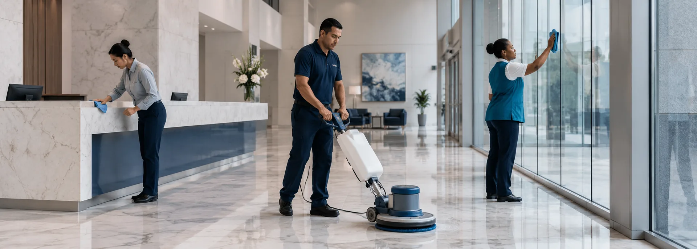
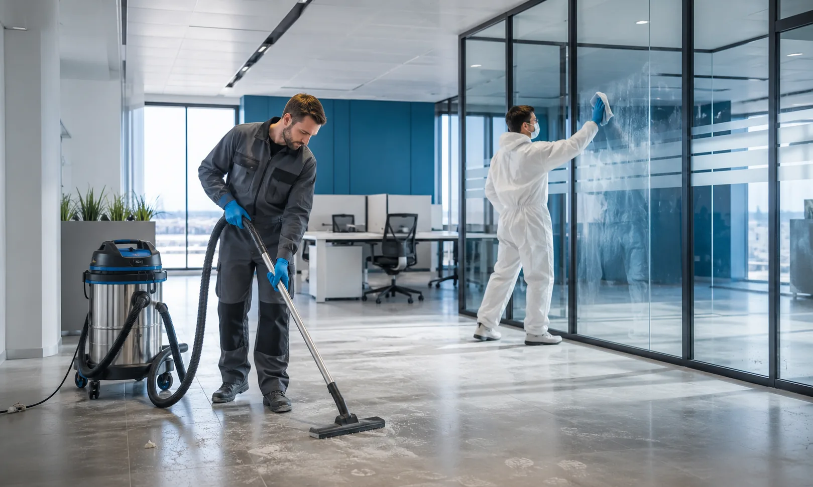

Sectores
Cada rubro, su propio protocolo
Un banco, un hospital y una casa particular tienen exigencias distintas. Adaptamos el protocolo a cada uno.
Dónde trabajamos
Seis sectores, un mismo criterio

BancosAtención fuera del horario de sucursal
ColegiosAulas, pasillos y sanitarios
HospitalesProtocolo de desinfección específico
OficinasRutinas diarias o por frecuencia
 Casas particularesLimpieza general y profunda
Casas particularesLimpieza general y profunda

Post-construcciónEntrega lista para habitar
El protocolo
Qué cambia entre un rubro y otro
La diferencia no está en limpiar más o menos, sino en cómo, con qué y en qué momento. Esto es lo que ajustamos según el sector.
Horario de trabajo
Fuera del horario de atención en bancos y colegios, sin interrumpir la actividad.
Productos e insumos
Sanitizantes específicos en hospitales, productos neutros en superficies delicadas.
Equipo de protección
El personal usa los elementos que cada ambiente exige.
Puntos críticos
Cada rubro tiene sus superficies de mayor contacto, y ahí ponemos el foco.
Antes de escribir
Preguntas frecuentes
¿Trabajan fuera del horario de atención?
Sí. En bancos, colegios y oficinas solemos trabajar fuera del horario de atención para no interrumpir la actividad.
¿Los insumos y las máquinas los ponen ustedes?
Sí, llevamos nuestro propio equipamiento e insumos, incluida la máquina de abrillantado y pulido.
¿Hacen limpieza por única vez o solo por contrato?
Las dos. Hacemos servicios puntuales, como una limpieza post-obra, y también rutinas periódicas.
¿Cómo se cotiza el servicio?
Según el tipo de espacio, los metros cuadrados y la frecuencia. Escribinos y coordinamos un relevamiento.
¿En qué zona trabajan?
Atendemos Buenos Aires y alrededores. Consultanos por tu zona puntual y te confirmamos.
Tu sector, nuestro protocolo
Contanos qué espacio necesitás limpiar
Coordinamos un relevamiento y armamos la propuesta a medida.